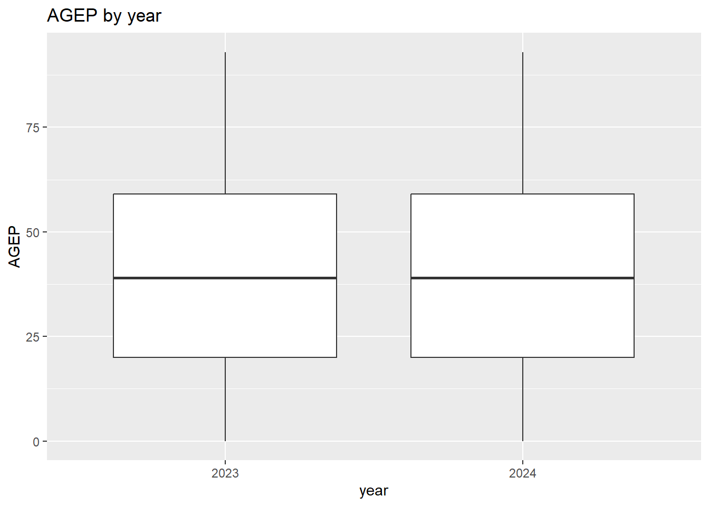
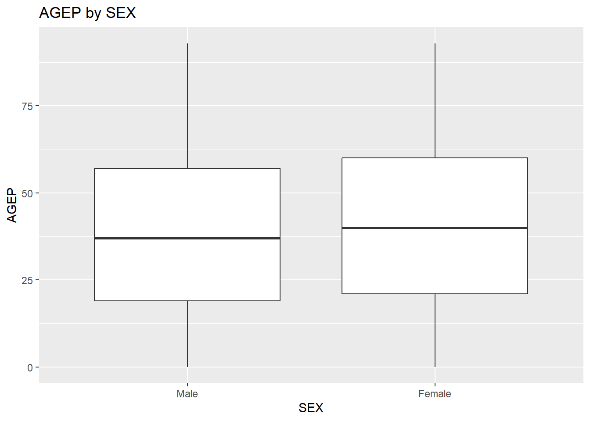

#needed packages throughout project
library(tidyverse)
library(httr)
library(jsonlite)
library(lubridate)ST558 Project 1
Introduction
The goal of this project is to write functions that will manipulate and process data from the Census Public Use Microdata Sample (PUMS) API, notably generic functions that will combine, summarize, and plot the queried data. The project will use PUMS data from 2021 through 2024.
The PUMS data contains person and household level characteristics for records returned by the Census API. Each row represents a sampled record, but the rows do not all carry the same population weight. The PWGTP variable indicates how many people in the population are represented by each record, which becomes important when summarizing the data.
The variables used in this project include numerical, categorical, time, and geography variables. The table below provides a brief description of each variable and the units or type of information it contains.
| Variable | Description | Type / Units |
|---|---|---|
| AGEP | Age | Numerical - years |
| GASP | Monthly gas cost | Numerical - dollars per month |
| GRPIP | Gross rent as a percentage of household income | Numerical - percent |
| JWMNP | Travel time to work | Numerical - minutes |
| PWGTP | Person weight; number of people represented by the record | Numerical - population weight |
| JWAP | Time of arrival at work | Time |
| JWDP | Time of departure for work | Time |
| FER | Gave birth to a child within the past 12 months | Categorical |
| HHL | Household language | Categorical |
| SCH | School enrollment | Categorical |
| SCHL | Educational attainment | Categorical |
| SEX | Sex | Categorical |
| ST / STATE | State code (ST in 2021-2022 and STATE in 2023-2024) |
Geography |
| REGION | Census region | Geography |
| DIVISION | Census division | Geography |
| year | Survey year added when combining multiple years | Categorical in our summaries |
Initial Setup
Before starting the actual project we first need to: 1) create a github repository, 2) set up github pages, 3) clone the repo locally as an R project, 4) create a .qmd file, and 5) push said changes back to github in order to create a webpage. This sequence of steps largely followed what we did in Homework 1. Lastly, in the code chunk below, we loaded the needed R packages to be used throughout the project.
Now we are ready to begin!
Part 1: Data Processing
Parsing Variable Values
Step 1: Manual setup
First we will manually query the URL and download the data for a single year (2021) using the GET() function from the httr package, then we will parse the data with the content() function and store it as an R object (list), and lastly will select variables of interest. Doing this manually first helps us understand the process before turning it into a function that can be used for multiple years.
# Year 2021
# Get 2021 Census variable information
# GET() from httr sends a request to the API and returns an HTTP response object
variable_return_2021 <- GET("https://api.census.gov/data/2021/acs/acs1/pums/variables.json")
# content() from httr parses the response content into an R object
parsed_2021 <- content(variable_return_2021)
# Variables needed for 2021
variables_2021 <- c("AGEP", "GASP", "GRPIP", "JWAP", "JWDP", "JWMNP","PWGTP", "FER",
"HHL", "SCH", "SCHL", "SEX","ST", "REGION", "DIVISION")
# use [] to subset the variables list and keep only the variables needed
variable_info_2021 <- parsed_2021$variables[variables_2021]
# Pull the values for each variable
# lapply() is a Base R function that applies the same function to each item in a list
variable_values_2021 <- lapply(variable_info_2021, function(x) x$values)Step 2: Writing a function to call any year
Next, we write a function that repeats the above process for any given year. This avoids having to manually repeat the same API request and parsing steps for each year.
# function to get variable values for one year
get_variable_values <- function(year) {
# paste0() is a Base R function that joins text together into one character string
# create URL for selected year
variable_URL <- paste0("https://api.census.gov/data/",year,"/acs/acs1/pums/variables.json")
# GET() sends the request to the Census API
variable_return <- GET(variable_URL)
# content() parses the returned response into an R object
parsed_variables <- content(variable_return)
# if ... else uses a logical condition to decide which code to run
# %in% checks whether year is 2021 or 2022; if TRUE use ST, otherwise use STATE
if (year %in% c(2021, 2022)) {
variables_needed <- c(
"AGEP", "GASP", "GRPIP", "JWAP", "JWDP", "JWMNP", "PWGTP",
"FER", "HHL", "SCH", "SCHL", "SEX", "ST", "REGION", "DIVISION"
)
} else {
variables_needed <- c(
"AGEP", "GASP", "GRPIP", "JWAP", "JWDP", "JWMNP", "PWGTP",
"FER", "HHL", "SCH", "SCHL", "SEX", "STATE", "REGION", "DIVISION"
)
}
# use [] to subset the variables list and keep only the variables needed
variable_info <- parsed_variables$variables[variables_needed]
# function(x) is an anonymous function; x represents each item in variable_info
# and x$values pulls the values component from each item
variable_values <- lapply(variable_info, function(x) x$values)
variable_values
}Step 3: Call function for years of interest
Now we proceed to run it for 2021, 2022, 2023, and 2024, with results stored in a .rds file.
# call the function once for each year of interest
variable_values_2021 <- get_variable_values(2021)
variable_values_2022 <- get_variable_values(2022)
variable_values_2023 <- get_variable_values(2023)
variable_values_2024 <- get_variable_values(2024)
# list() is a Base R function that combines objects into a list
# Combine yearly variable-value lists into one master list
variable_values <- list(
"2021" = variable_values_2021,
"2022" = variable_values_2022,
"2023" = variable_values_2023,
"2024" = variable_values_2024
)
# saveRDS() saves a single R object to an .rds file
# save the master list in the data folder
saveRDS(
variable_values,
"data/pums_variable_values.rds"
)
# readRDS() reads the saved R object back into R
# read saved variable information for use later in the project
variable_values <- readRDS("data/pums_variable_values.rds")We now have one saved object containing the variable values for all four years, which we will use later when validating and formatting the Census data returned by the API.
Parsing API Data
Now we will write a function that lets a user to query the PUMS API using an API key and return the results in a formatted tibble.
Step 1: Getting the process to work with base case
We will first run through the query process manually, for a single year, so we can see how the API response is converted into usable R data and then a tibble.
#Census API key
API_key <- "de74f201ac188240a9b31ef280b4980495d05d22"
#Base URL for the 2024 PUMS API
URL_2024 <- "https://api.census.gov/data/2024/acs/acs1/pums"
# Query parameters are grouped via list()
query_2024 <- list(
get = "AGEP,PWGTP,SEX",
`for` = "state:37", #note`for` is placed in backticks because for is a reserved word in R
key = API_key)
#GET() sends the request to the Census API using the URL and query parameters
census_return_2024 <- GET(
URL_2024,
query = query_2024
)
# converts returned response to readable JSON text
json_text_2024 <- rawToChar(census_return_2024$content)
# converts the JSON array into an R object
parsed_2024 <- fromJSON(json_text_2024)
# save first row as column names
column_names <- parsed_2024[1, ]
# remove first row and convert remaining data to tibble
census_data_2024 <- as_tibble(
parsed_2024[-1, ]
)Warning: The `x` argument of `as_tibble.matrix()` must have unique column names if
`.name_repair` is omitted as of tibble 2.0.0.
ℹ Using compatibility `.name_repair`.# assign column names previously saved
names(census_data_2024) <- column_names
#inspect tibble
head(census_data_2024)# A tibble: 6 × 4
AGEP PWGTP SEX state
<chr> <chr> <chr> <chr>
1 23 60 1 37
2 21 49 1 37
3 20 24 1 37
4 79 54 2 37
5 18 79 1 37
6 19 54 2 37 Step 2: Use a helper function to create tibble
Now we proceed with creating a helper function to automate the process we just completed manually. The process will do the following: 1) the API returns the data as raw content, 2) rawToChar() converts the raw content into readable JSON text, 3) fromJSON() converts the JSON text into an R object, 4) the first row is saved as the column names, and 5) the remaining data is converted into a tibble.
# helper function to convert API response into a tibble
census_tibble <- function(api_return) {
# convert returned response into an R object
parsed_data <- fromJSON(
rawToChar(api_return$content)
)
# save first row as column names
column_names <- parsed_data[1, ]
# remove first row and convert remaining data to tibble
census_data <- as_tibble(
parsed_data[-1, ]
)
# assign column names previously saved
names(census_data) <- column_names
# return tibble
census_data
}Test Section
# test helper function
census_data_test <- census_tibble(census_return_2024)
# inspect tibble
head(census_data_test)# A tibble: 6 × 4
AGEP PWGTP SEX state
<chr> <chr> <chr> <chr>
1 23 60 1 37
2 21 49 1 37
3 20 24 1 37
4 79 54 2 37
5 18 79 1 37
6 19 54 2 37 Step 3: Write main API Function
Next we wrap the helper function into a main function that parses the data, but that will also allow users to change the survey year, numerical variables, categorical variables, geography level, and geography value, as long as the selected inputs are valid. We will first define the default inputs and then add checks to make sure the user has entered allowable values.
The main function will use the following inputs:
year: which survey year to querynumerical_variables: which numerical variables to returncategorical_variables: which categorical variables to returngeography: State, Region, or Divisiongeography_value: which particular state, region, or division to return
# Default settings for function f(x1,x2,x3,x4,x5) with five inputs
census_query <- function(
year = 2024,
numerical_variables = c("AGEP", "PWGTP"),
categorical_variables = "SEX",
geography = "State",
geography_value = NULL
) { # now we add the body of function in between these curly brackets
# check that only one year was entered
# length() returns the number of values in an object
if (length(year) != 1) {
# stop() ends the function and returns an error message
stop("Only one year can be entered.")
}
# valid years
valid_years <- c(2021, 2022, 2023, 2024)
# check that year is valid
if (!(year %in% valid_years)) {
stop("Year must be 2021, 2022, 2023, or 2024.")
}
# valid numerical variables
valid_numerical_variables <- c(
"AGEP", "GASP", "GRPIP", "JWAP", "JWDP", "JWMNP", "PWGTP"
)
# check that only valid numerical variables were entered
# all() checks whether every selected variable is valid
if (!all(numerical_variables %in% valid_numerical_variables)) {
stop("Invalid numerical variable entered.")
}
# check that PWGTP was included
if (!("PWGTP" %in% numerical_variables)) {
stop("PWGTP must be included.")
}
# check that at least one numerical variable besides PWGTP was included
# setdiff() returns values in the first vector that are not in the second
if (length(setdiff(numerical_variables, "PWGTP")) < 1) {
stop("At least one numerical variable other than PWGTP must be included.")
}
# valid categorical variables
valid_categorical_variables <- c(
"FER", "HHL", "SCH", "SCHL", "SEX"
)
#check that at least one categorical variable was entered
if (length(categorical_variables) < 1) {
stop("At least one categorical variable must be included.")
}
#check that only valid categorical variables were entered
if (!all(categorical_variables %in% valid_categorical_variables)) {
stop("Invalid categorical variable entered.")
}
# valid geography levels
valid_geographies <- c("Region", "Division", "State")
# check that only one geography level was entered
if (length(geography) != 1) {
stop("Only one geography level can be entered.")
}
# check that geography level is valid
if (!(geography %in% valid_geographies)) {
stop("Geography must be Region, Division, or State.")
}
# determine which geography variable to use
if (geography == "State") {
#state variable changed names after 2022
if (year %in% c(2021, 2022)) {
geography_variable <- "ST"
} else {
geography_variable <- "STATE"
}
} else if (geography == "Region") {
geography_variable <- "REGION"
} else if (geography == "Division") {
geography_variable <- "DIVISION"
}
# pull allowable geography values from saved variable information
# [[ ]] extracts an individual element from a list
# as.character() converts year to character to match our named yearly lists
geography_values <-
variable_values[[as.character(year)]][[geography_variable]][["item"]]
# Census geography codes are stored as the names
# names() returns the Census geography codes stored as the names
valid_geography_values <- names(geography_values)
# assign a default geography value if none was entered
# is.null() checks whether the user left geography_value unspecified
if (is.null(geography_value)) {
if (geography == "State") {
geography_value <- "37"
} else if (geography == "Region") {
geography_value <- "3"
} else if (geography == "Division") {
geography_value <- "5"
}
}
#as.character() converts the geography value to character
geography_value <- as.character(geography_value)
#check that only one geography value was entered
if (length(geography_value) != 1) {
stop("Only one geography value can be entered.")
}
# check that geography value is valid or is "all"
# tolower() converts text to lowercase so all, All, and ALL are treated the same
# && means both logical conditions must be TRUE
if (!(geography_value %in% valid_geography_values) &&
!(tolower(geography_value) == "all")) {
stop("Invalid geography value entered.")
}
# build API URL using a selected year
API_URL <- paste0("https://api.census.gov/data/", year, "/acs/acs1/pums")
# build query parameters
# combine numerical and categorical variables into one vector
variables_to_get <- c(
numerical_variables,
categorical_variables
)
# convert variable names to comma-separated format for API
# paste() joins character values together
# collapse = "," combines the variable names into the comma-separated
# format required by the Census API
get_variables <- paste(
variables_to_get,
collapse = ","
)
# "*" tells the Census API to return all values for the selected geography
if (tolower(geography_value) == "all") {
geography_query_value <- "*"
} else {
geography_query_value <- geography_value
}
# build geography portion of query
# ":" separates the geography type from its value in the format required by the API
geography_query <- paste0(
tolower(geography),
":",
geography_query_value
)
# group API query parameters into a list
query_parameters <- list(
get = get_variables,
`for` = geography_query,
key = API_key
)
# run GET() to send request to Census API
api_return <- GET(
API_URL,
query = query_parameters
)
# use our helper function to convert API response to a tibble
census_data <- census_tibble(api_return)
# convert returned variables to appropriate data types
# 1) ordinary numerical variables
# identify time variables
time_variables <- c("JWAP", "JWDP")
# setdiff() removes the time variables from the selected numerical variables
regular_numerical_variables <- setdiff(
numerical_variables,
time_variables
)
# a for loop repeats the same code for each selected numerical variable
# as.numeric() converts each variable from character to numeric
for (variable in regular_numerical_variables) {
census_data[[variable]] <- as.numeric(census_data[[variable]])
}
# 2) time variables
# intersect() returns values that appear in both vectors
# identify which time variables were selected by the user
selected_time_variables <- intersect(
numerical_variables,
time_variables
)
# convert selected time variables to midpoint times
for (variable in selected_time_variables) {
# sapply() applies time_midpoint() to each value in the selected variable
# as_hms() converts the resulting values into a time format
census_data[[variable]] <- hms::as_hms(
sapply(
census_data[[variable]],
time_midpoint,
year = year,
variable = variable
)
)
}
# 3) categorical variables
# repeat the conversion for each selected categorical variable
for (variable in categorical_variables) {
# pull category values from saved variable information
category_values <-
variable_values[[as.character(year)]][[variable]][["item"]]
# factor() converts the variable into a categorical factor
# using the Census codes as levels and descriptions as labels
census_data[[variable]] <- factor(
census_data[[variable]],
levels = names(category_values),
labels = unlist(category_values)
)
}
# add "census" as the first class while retaining the existing tibble classes
class(census_data) <- c("census", class(census_data))
# return completed tibble
census_data
}Test Section
# test function using all default inputs
census_query()# A tibble: 114,270 × 4
AGEP PWGTP SEX state
<dbl> <dbl> <fct> <chr>
1 23 60 Male 37
2 21 49 Male 37
3 20 24 Male 37
4 79 54 Female 37
5 18 79 Male 37
6 19 54 Female 37
7 22 58 Female 37
8 18 17 Female 37
9 22 30 Male 37
10 67 37 Female 37
# ℹ 114,260 more rowsThe default functioncensus_query() returns 2024 Census data using the default numerical variables AGEP and PWGTP, categorical variable SEX, and the default State geography. The output also shows that the numerical variables have been converted to numeric values and SEX has been converted to a factor with the appropriate labels.
Combining Years
Next, we write a function that allows the user to query multiple years of Census data. This function will use the single-year census_query() function created above for each selected year and then combine the results into one tibble. We use lapply() to take each year and apply the single-year function.
# function to combine Census data from multiple years
# note that years is plural because multiple years can be entered
census_query_years <- function(
years,
numerical_variables = c("AGEP", "PWGTP"),
categorical_variables = "SEX",
geography = "State",
geography_value = NULL
) {
# query Census data for each selected year
# lapply() applies the same function to each selected year and returns a list
yearly_data <- lapply(
years,
function(current_year) {
# query one year at a time using our census_query() function
census_data <- census_query(
year = current_year,
numerical_variables = numerical_variables,
categorical_variables = categorical_variables,
geography = geography,
geography_value = geography_value
)
# add a year variable so we know which survey year each row came from
census_data$year <- current_year
# return data for the current year
census_data
}
)
# combine all years into one tibble
# bind_rows() from dplyr combines the yearly tibbles by stacking the rows
combined_data <- bind_rows(yearly_data)
# make sure census class is included only once
# unique() removes duplicate class names if "census" is already present
class(combined_data) <- unique(c("census", class(combined_data)))
# return combined tibble
combined_data
}Test Section
# test combining two years
census_years_test <- census_query_years(years = c(2023, 2024))
# inspect results
# head() shows the first six rows
head(census_years_test)# A tibble: 6 × 5
AGEP PWGTP SEX state year
<dbl> <dbl> <fct> <chr> <dbl>
1 18 62 Female 37 2023
2 93 94 Female 37 2023
3 22 73 Male 37 2023
4 39 63 Male 37 2023
5 19 50 Male 37 2023
6 39 41 Male 37 2023# str() shows the structure and variable types
str(census_years_test)census [226,190 × 5] (S3: census/tbl_df/tbl/data.frame)
$ AGEP : num [1:226190] 18 93 22 39 19 39 26 19 34 19 ...
$ PWGTP: num [1:226190] 62 94 73 63 50 41 16 10 53 7 ...
$ SEX : Factor w/ 2 levels "Male","Female": 2 2 1 1 1 1 2 1 1 2 ...
$ state: chr [1:226190] "37" "37" "37" "37" ...
$ year : num [1:226190] 2023 2023 2023 2023 2023 ...# class() shows the classes attached to the object
class(census_years_test)[1] "census" "tbl_df" "tbl" "data.frame"# unique() shows the distinct survey years included
unique(census_years_test$year)[1] 2023 2024The test shows that the 2023 and 2024 data were successfully combined into one tibble, with the year variable identifying the survey year for each row. The combined object also retains the “census” class so it can be used with the custom summary and plotting functions created next.
Part 2: Writing Generic Functions
Numeric and Categorical Summaries
Now that we have functions that return Census data for one or multiple years, we can create a custom summary() function for objects with the "census" class. Because we added "census" to the class of our returned tibbles, R can use a method called summary.census() whenever summary() is called on one of these objects.
Since each row does not necessarily represent one person, we also need to use PWGTP when calculating summaries. The function will calculate weighted means and standard deviations for numerical variables and weighted counts for categorical variables. Time variables will be excluded from the numerical summaries, and year will be treated as categorical.
# custom summary method for objects with the "census" class
summary.census <- function(
object,
numerical_variables = NULL,
categorical_variables = NULL
) {
# identify time variables to exclude from numerical summaries
time_variables <- c("JWAP", "JWDP")
# if numerical variables are not specified, use all numeric variables
if (is.null(numerical_variables)) {
# sapply() checks each column to determine whether it is numeric
numerical_variables <- names(object)[
sapply(object, is.numeric)
]
# remove PWGTP, year, and time variables from numerical summaries
numerical_variables <- setdiff(
numerical_variables,
c("PWGTP", "year", time_variables)
)
}
# if categorical variables are not specified, use factor and character variables
if (is.null(categorical_variables)) {
# identify columns that are stored as factors or character values
categorical_variables <- names(object)[
sapply(
object,
function(x) is.factor(x) || is.character(x)
)
]
# treat year as a categorical variable for summary purposes
if ("year" %in% names(object)) {
categorical_variables <- c(categorical_variables, "year")
}
}
# create an empty list to store summary results
summary_results <- list()
# calculate weighted summaries for numerical variables
for (variable in numerical_variables) {
# pull numerical values and population weights
numeric_values <- object[[variable]]
weight_values <- object$PWGTP
# is.na() identifies missing values
# keep only rows where both the variable and weight are not missing
valid_rows <- !is.na(numeric_values) & !is.na(weight_values)
numeric_values <- numeric_values[valid_rows]
weight_values <- weight_values[valid_rows]
# calculate weighted mean using PWGTP
weighted_mean <- sum(
numeric_values * weight_values
) / sum(weight_values)
# calculate weighted standard deviation using PWGTP
weighted_sd <- sqrt(
sum(numeric_values^2 * weight_values) / sum(weight_values) -
weighted_mean^2
)
# save the mean and standard deviation for this variable
summary_results[[variable]] <- c(
mean = weighted_mean,
sd = weighted_sd
)
}
# calculate weighted counts for each categorical variables
for (variable in categorical_variables) {
# pull categorical values and population weights
category_values <- object[[variable]]
weight_values <- object$PWGTP
# keep only rows without missing category values or weights
valid_rows <- !is.na(category_values) & !is.na(weight_values)
category_values <- category_values[valid_rows]
weight_values <- weight_values[valid_rows]
# tapply() splits the weights by category and applies sum() to each group
weighted_counts <- tapply(
weight_values,
category_values,
sum
)
# save weighted counts for this variable
summary_results[[variable]] <- weighted_counts
}
# return the results as a named list
summary_results
}Test Section
# test custom summary method using the default variables
summary(census_years_test)$AGEP
mean sd
39.76845 23.25635
$SEX
Male Female
10697940 11183575
$state
37
21881515
$year
2023 2024
10835491 11046024 # test summary method with selected variables
summary(
census_years_test,
numerical_variables = "AGEP",
categorical_variables = "SEX"
)$AGEP
mean sd
39.76845 23.25635
$SEX
Male Female
10697940 11183575 The default summary calculates the weighted mean and standard deviation for AGEP and weighted counts for the categorical variables in the tibble, including year. For the combined 2023 and 2024 data, the weighted mean age is approximately 39.77 years. The second call demonstrates that the user can also specify which numerical and categorical variables to summarize, in this case returning only AGEP and SEX.
Graphical Summaries
Next, we create a custom plot() function for Census objects. Because our returned tibbles have the "census" class, calling plot() on one of these objects will use our plot.census() method. The function will allow the user to specify one categorical variable and one numerical variable and will create a weighted boxplot using PWGTP.
#custom plot method for objects with the "census" class
plot.census <- function(
x,
cat_var,
num_var,
...
) {
#ggplot() creates the plot using the census tibble x
ggplot(
x,
aes(
# get() allows us to use column names supplied as character strings
# factor() makes sure the x-axis variable is treated as categorical
x = factor(get(cat_var)),
# get() identifies the selected numerical variable
y = get(num_var),
# PWGTP weights each observation by the population it represents
weight = PWGTP
)
) +
# geom_boxplot() creates a boxplot for each category
geom_boxplot() +
labs( # labs() adds axis labels and a title
x = cat_var,
y = num_var,
title = paste(num_var, "by", cat_var)
)
}Test Section
# test plot method using year as the categorical variable
# and age as the numerical variable
plot(
census_years_test,
cat_var = "year",
num_var = "AGEP"
)
# test plot method using SEX as the categorical variable
plot(
census_years_test,
cat_var = "SEX",
num_var = "AGEP"
)
The plot compares the weighted distribution of age between the 2023 and 2024 Census data. Using year as the categorical variable demonstrates that the year variable can be treated as a category even though it is stored numerically in the tibble. The second plot uses SEX instead of year, showing that the same plotting function can be used with different categorical inputs.